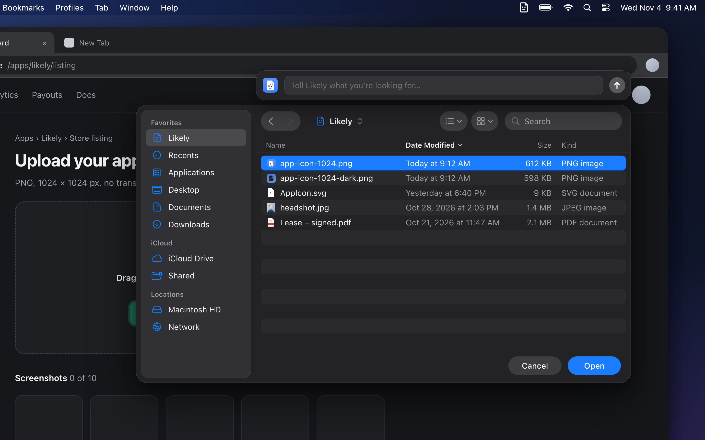

Recurring
$3/month
A subscription gives us an excuse to keep working on this silly little app.
DownloadOpen source, for macOS
A search bar for every file picker. Describe what you’re looking for in plain English, and Likely finds it.
A folder in your sidebar, a bar above the picker, and an icon in your menu bar. That’s it.

Likely is built to be tested, tweaked and improved by you.
You describe what you need, like “my headshot”, and it comes back with the wrong files.
In History, click Make Eval and pick the file it should have found.
Likely gives you several ways to improve results.
See what got better, and check nothing else broke.
Same words, right file.
Recurring
$3/month
A subscription gives us an excuse to keep working on this silly little app.
DownloadOne-time
$29once
One payment, and you can use the app, forever.
DownloadAllergic to paying?
Free
Build it from GitHub. It’s open source under GPL-3.0.
Build it yourselfWhen a file picker opens, Likely puts a search bar above it and your most recently added files in the Likely folder. Your coding agent runs only when you type a request in the bar and submit it. It can only search and read, and Likely copies the matches into the folder. Whether the picker jumps straight to the Likely folder is a setting. The copies are cleared shortly after you’re done.
macOS 14 or later, and a coding agent: Claude Code, Codex, Gemini CLI, OpenCode or Hermes.
No. Your agent can search and read. It can’t edit, move or delete anything. Likely never modifies your files.
It can search and read files to find what you asked for. It can’t change or delete anything, and it can’t read Likely’s own data, like your search history or logs. It’s kept out of Photos, Mail, Messages, Contacts, Notes and Safari unless you allow them in Settings → Permissions.
Likely doesn’t run an AI. Searches go to the agent you chose, under your account with that provider. Likely never sends your searches or files to us.
| Where it goes | What | When |
|---|---|---|
| The AI agent you picked, through your own account (OpenAI, Anthropic, etc.) |
|
Only when you search |
| Likely’s license server | A random install ID, whether your license is active, and your IP address, like any web request | When you activate and when Likely checks your license |
| Stripe | Your email and payment details. Your card number never reaches us. | When you buy or manage a subscription |
| Update checks | Your IP address and app version, like any download | When Likely checks for or downloads an update |
| Stays on your Mac | Your search history, test cases and logs, and the copies in your Likely folder | Always |
The details are in our privacy policy.
No. A screenshot of the window behind the picker is sent only when you search, and only to the agent you chose. You can turn them off in Settings, and they’re never sent if you don’t grant Screen Recording.
Only in Search history, which you can turn off or clear in Settings. In our downloadable app it’s encrypted with a key kept in your Mac’s Keychain, so other apps can’t read it. If you build Likely yourself, encryption stays off until you set up signing.
Only what’s needed to fix bugs: which app opened a picker, how long a search took, whether it worked. Your searches, window titles and file names show up as short codes, not text. To send us a detailed log with a bug report, turn on “Log details for troubleshooting”. It switches itself off after 24 hours.
The Likely folder holds copies. Originals stay put, and the folder is cleared shortly after you’re done.
No. There’s no sign-up, and purchases work without an account.
That’s how it notices a file picker opening, shows the search bar above it, and jumps the picker to the Likely folder in its sidebar. Screen Recording is optional and only needed for screenshots with searches.
Yes. Add tools: any command-line program your agent should use, like rclip for finding photos by what’s in them. Then test the result on your own files with evals. See docs/TOOLS.md and docs/EVALS.md.
Restoring a purchase by email is coming, but isn’t here yet. Until then, open an issue on GitHub and we’ll sort it out.